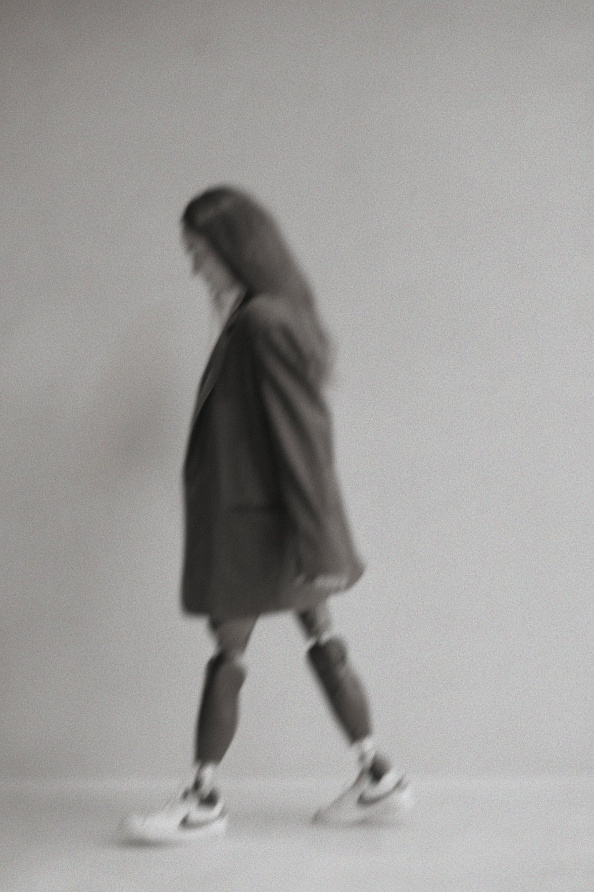
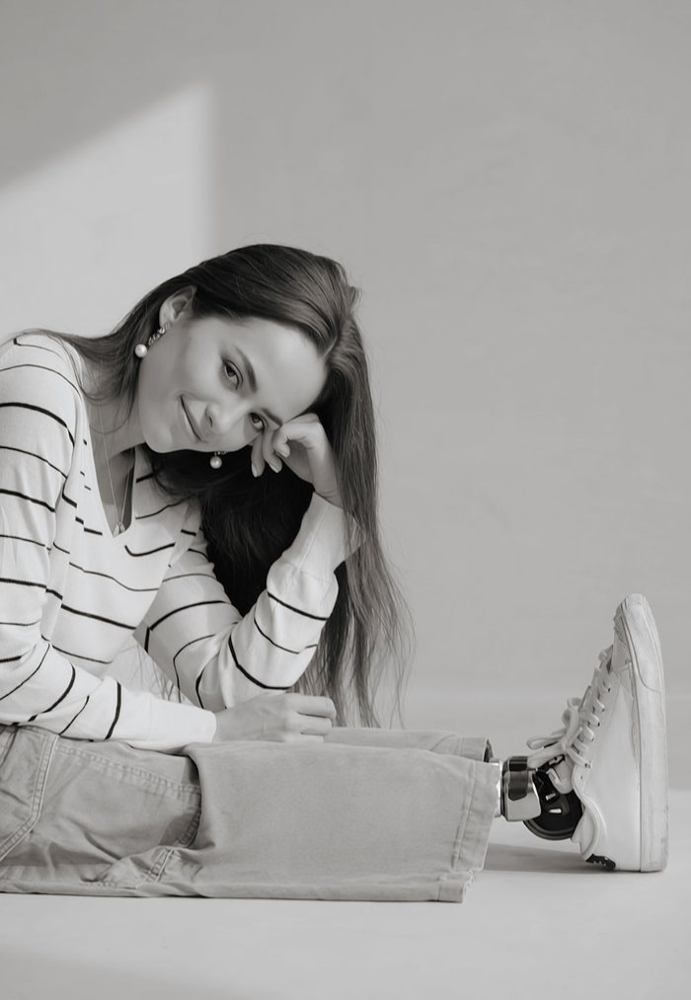

La Magia del Caos · Aislinn Derbez
Media / Press
En los medios.
Listas, entrevistas y apariciones de Valeria de la Torre.


Prensa escrita
Presencia en medios.
Listas, entrevistas y reportajes. Cada tarjeta abre la publicación original.
Quién01
Quién 50 · 2025 · Agentes de Cambio
Quién 50 — 2025: Valeria de la Torre
Reconocida en la lista Quién 50 de 2025, en la categoría Agentes de Cambio.
Ver en Quién ELLE México02 Edición impresa · Marzo 2026 Mujeres chingonasParte de la sección de personajes del número de marzo 2026 (ELLE 285).
Ver la edición (PDF) Caras México03 Edición impresa · Mayo 2026 Val de la TorreEntrevista en la edición de mayo 2026.
Leer en Zinio InStyle México04 Badass Woman 2026 · 6 mar 2026 38 mujeres que están cambiando las reglas Leer en InStyle L’Beauté05 The Boss · 5 oct 2026 The Boss: Valeria de la Torre, cuando ser fuerte es tu única opción Leer en L’Beauté WIRED en Español06 Video · Octubre 2025 Las prótesis inteligentes: una nueva forma de volver a caminar Ver en WIRED ELLE México07 Wellness · 22 abr 2026 La siguiente montaña: una invitación a moverse, reconectar y no rendirse Leer en ELLE El Heraldo de México08 Mente Mujer · 3 ago 2026 Un mensaje de fortaleza Leer en El Heraldo Travesías09 Viajes · 22 jun 2026 Val de la Torre: un viaje a Copenhague para encontrar su nuevo ritmo Leer en Travesías Reforma10 Entrevista La historia de Valeria de la Torre Leer en ReformaPodcasts y entrevistas en video
Mira mis conversaciones.
Resignificando Ando · Shulamit Graber
El accidente que lo cambió todo… ¿Cómo no rendirte?
Se Regalan Dudas · Episodio 660
Cuando la vida no sale como imaginabas
Diario de un Humano
Perdí mis piernas pero no las ganas de vivir
Fuera de Serie · Diego Calzada
Perdió sus piernas y se volvió más fuerte que nunca (mini documental)
Escucha Podcast · Álvaro López Pinchetti
Volver a pararte… de otra manera
Más conversaciones
Prensa
Solicitudes de prensa y entrevistas.
Para entrevistas, reportajes y podcasts. Comparte el medio, el formato y tu fecha límite.
¿Buscas una conferencia? Deja tus datos aquí →
Gracias.
Recibimos tu mensaje y nos pondremos en contacto contigo a la brevedad.